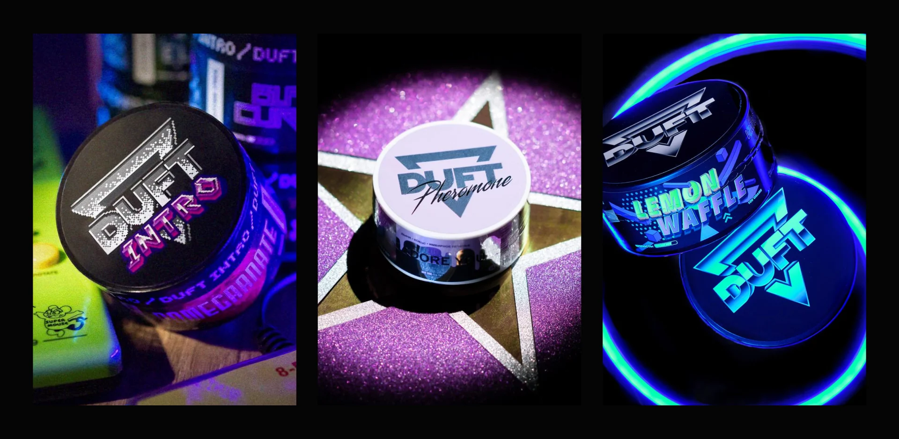
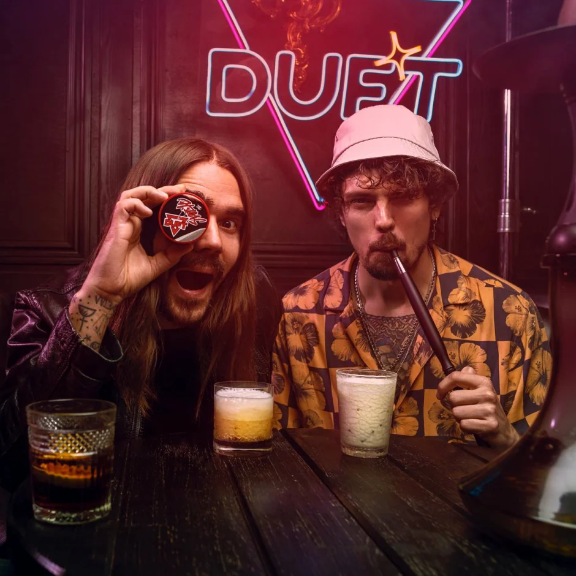
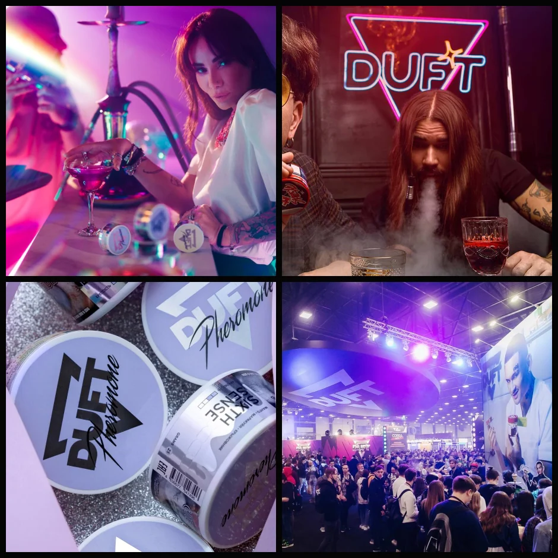
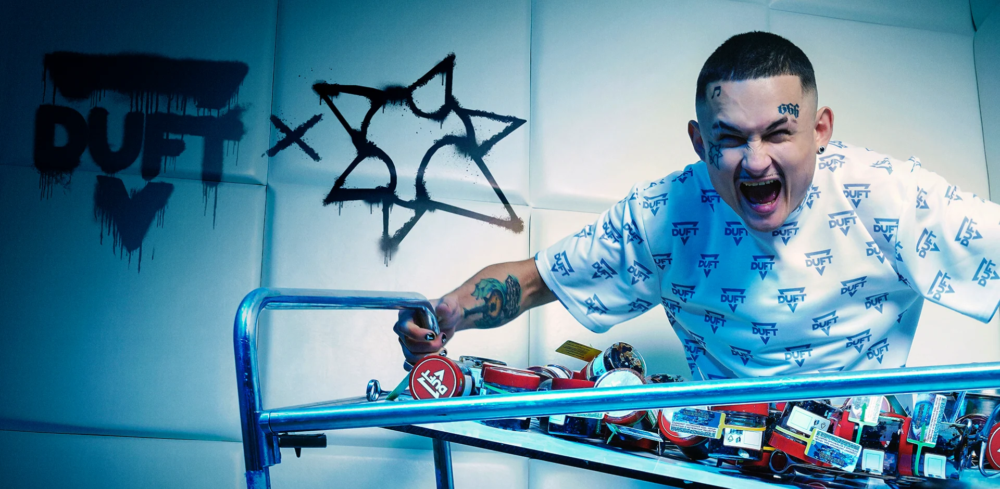

Duft: Hookah Flames
Лайфстайл-бренд табака на стыке продукта, поп-культуры и инфлюенсеров.
Duft — один из заметных игроков в своей категории: опора на коллаборации с артистами и ярко выраженный визуальный характер, который легко узнать.
В перегретой нише со слабым визуальным уровнем нужно было создать отличительный бренд — узнаваемый, масштабируемый и гибкий, готовый к постоянным коллаборациям и кампаниям.
Я собрал айдентику в духе retro/synthwave с неоновой графикой и развернул её в систему, объединившую более 200 продуктовых позиций — упаковка, digital и кампании с участием Моргенштерна, The Hatters и Айзы Долматовой.
Линейка из двухсот с лишним позиций удержалась в единой системе, а узнаваемость бренда заметно выросла в digital и в поп-культурном поле.
- Единая система удержала 200+ SKU без потери узнаваемости.
- Коллаборации с Моргенштерном, The Hatters, Айзой Долматовой и др.
- Визуальный язык на ретровейве, синтвейве и неоне.
- Узнаваемость — через упаковку и работу с инфлюенсерами.



